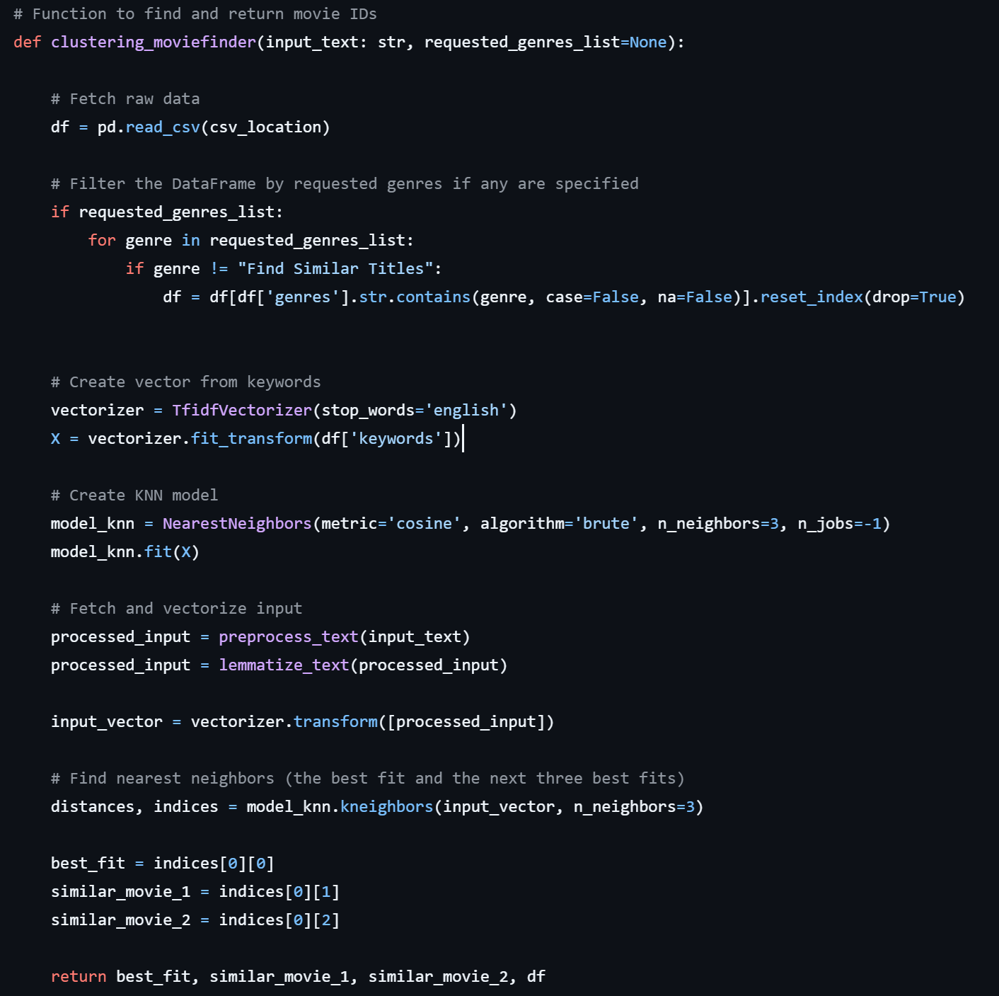

A log of some of Donald Trumps lies

FACTHOLE
This project is an experiment in exploring fun ways of utilizing AI and automation.
On this website I'm running an automated daily script that scrapes Donald Trump's
Truth Social feed and runs it through a small AI agent capable of searching the web.
The agent evaluates whether a claim appears false and stores the result in a
Supabase database. The entire workflow runs automatically once per day.
The frontend was built using Lovable.
The agent is based on an OpenAI gpt-5-mini model that has access to a free websearching api
for making simple websearch queries and access to the headlines and summaries of the results.
It's not great, and has a habit of missing certain critical facts due
to not making a perfect websearch combined with not having up-to-date inherent knowledge. I still
think it's a fun concept and I will probably spend some time refining the logic of the agent at
some point in the future.
The browser addon that makes you forget about Elon Musk

De-Muskifier
A Firefox extension that replaces mentions of Elon Musk, Tesla, and SpaceX
with raccoons and raccoon facts. It scans the active page for keywords and
swaps content in place.
Sometimes it works a little too well. For instance, when visiting the page Elon
it kind of goes crazy and replaces all occurences of the brand name Elon, which is everywhere, but the goal is joy, not perfection!
This small addon had very positive feedback on Reddit's SideProject subreddit.
Keyword-based movie finder using machine learning

FlickPick
FlickPick converts user text input into vectors using TF-IDF, compares them
against movie plot vectors, and finds the closest matches using a nearest
neighbors algorithm.
Created as a group assignment, I was responsible for frontend development
and the machine learning logic.
 Movie keywords from a large TMDB dataset are converted into numerical vectors using TF-IDF,
allowing both movies and user input to exist in the same semantic space.
When a user describes what they want to watch, their text is processed and compared against
all movies using cosine similarity and a k-Nearest Neighbors search.
Movie keywords from a large TMDB dataset are converted into numerical vectors using TF-IDF,
allowing both movies and user input to exist in the same semantic space.
When a user describes what they want to watch, their text is processed and compared against
all movies using cosine similarity and a k-Nearest Neighbors search. Instead of predicting genres or ratings, the system simply finds the movies whose keywords are closest to the users description, returning one top match and two similar alternatives. Optional genre filtering narrows the search without restricting natural language input.
The result is a fast, explainable recommendation system that focuses on similarity rather than prediction. 